מרן הרב שטיינמן זצ״ל
תרע״ה - תשע״ח. מאה ושלוש שנים של תורה: מסמטאות בריסק, דרך שנות המלחמה בשווייץ, אל הקמת עולם התורה בארץ ישראל.
גללו, החליקו או השתמשו בחיצים כדי ללכת בעקבות חייו.
נולד בקמניץ, בן לבריסק
ביום י״ד בחשוון, בעיצומה של מלחמת העולם הראשונה, נולד אהרן יהודה לייב לר׳ נח צבי ולמרת גיטל פייגא. הוריו היו תושבי בריסק, ולקמניץ נמלטו אל הורי האם בגלל קרבת העיר לחזית.
אביו היה מלמד ושמש בית הכנסת בבריסק, והמשפחה התגוררה בשכנות לרב העיר, רבי יצחק זאב הלוי סולובייצ׳יק.
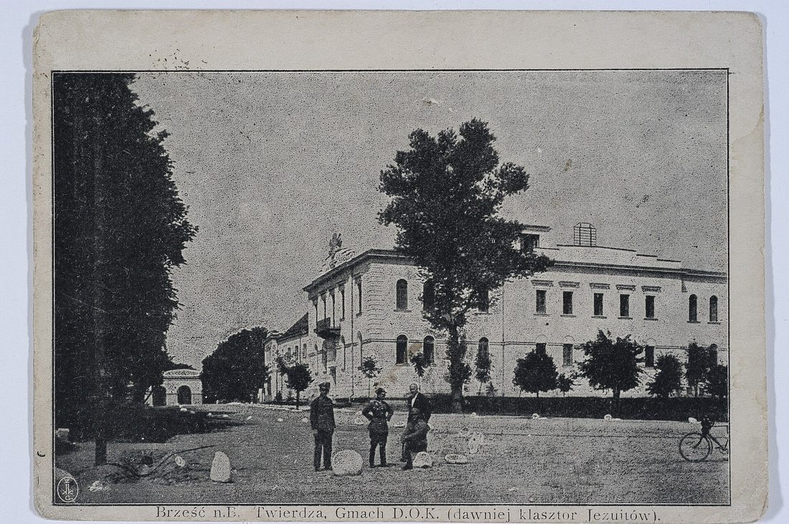
הילד מבריסק, בישיבת תורת חסד
יצא לו שם של עילוי, ובגיל 11 או 12 כבר התקבל לישיבת תורת חסד בבריסק, צעיר מהמקובל. הוא היה מקורב לראש הישיבה, הרב משה סוקולובסקי, ולמשגיח הרב אברהם יעקב גורדון.
לימים קרא לבנו בכורו על שם רבו. את הישיבה הזו זכר כל ימיו, ועל שמה נקראת היום ישיבת תורת חסד באלעד.
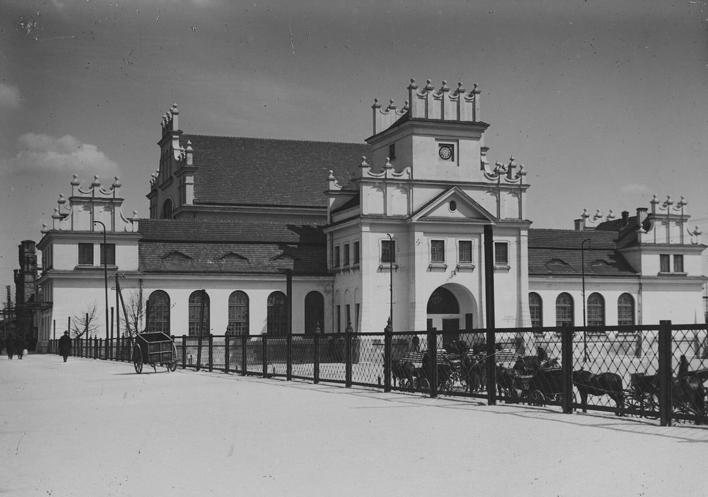
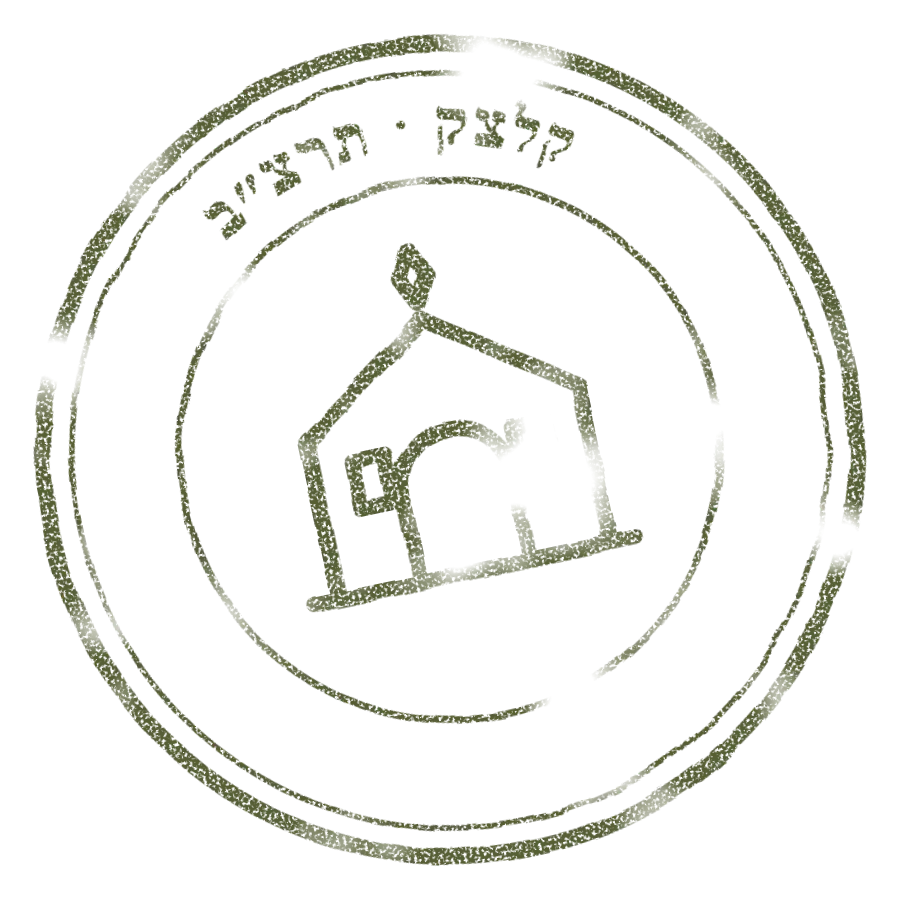
בחיפוש אחר הרבי
בגיל 16 נסע ללמוד אצל הרב פסח פרוסקין בקוברין, עד שהישיבה שם נסגרה. בשבט תרצ״ב עבר לישיבת קלצק של הרב אהרן קוטלר, ובתמוז שב לתורת חסד בראשות הרב ישראל חיים קפלן.
באותן שנים למד בחברותא עם בני הרב מבריסק ונבחן אצל אביהם, ונסמך לרבנות על ידי הרב שמחה זליג ריגר.
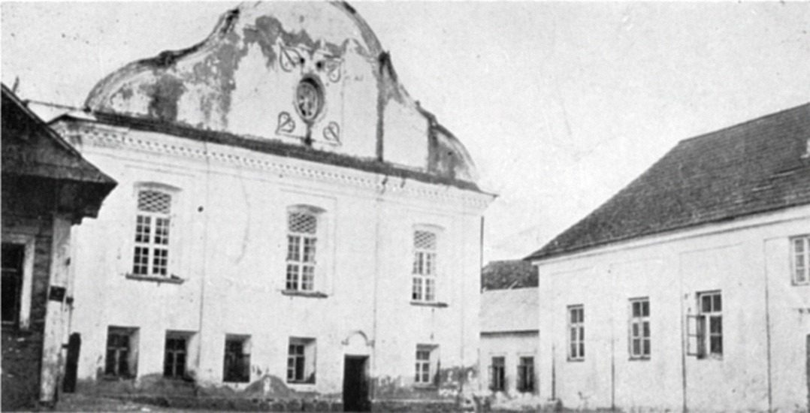
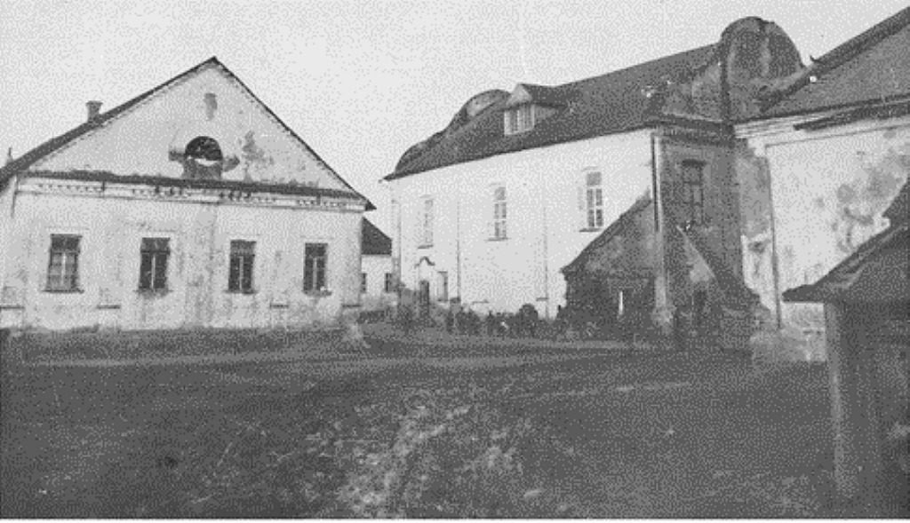
הבוקר אור, לשווייץ
צו הגיוס לצבא הפולני הוביל אותו לעזוב. בקיץ תרצ״ז קיבל אשרה ללימודים בישיבת עץ חיים במונטרה, בראשות הרב ירחמיאל אליהו בוצ׳קו, עם מכתבי המלצה מהרב מבריסק ומהרב ברוך בער ליבוביץ.
לפני הנסיעה ערכו הוא וחבריו גורל הגר״א, ועלה הפסוק ״הבוקר אור והאנשים שולחו״. בסיוון תרצ״ז הגיע למונטרה, ושם כיהן כר״מ, עוד בשנות העשרים לחייו.
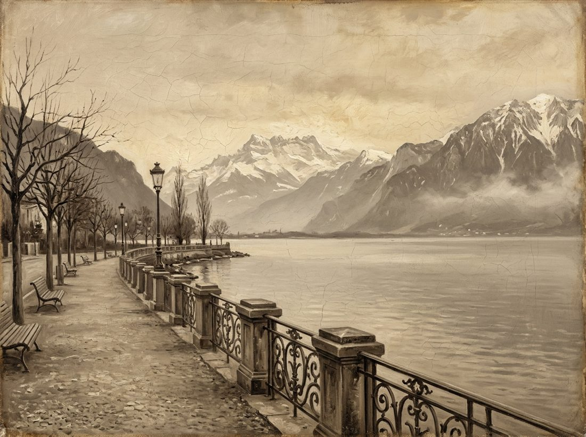
תורה בשנות המלחמה
בימי מלחמת העולם השנייה נלקח, כנתין פולני, למחנה עבודה סמוך לבזל ואולץ לסלול כביש. הרב משה סולובייצ׳יק, שהנהיג את הפליטים במחנה, השלים במקומו חלק מהעבודה.
אחרי שחרורו התקבצו סביבו תלמידים בלוצרן. בטבת תש״ד נשא לאישה את מרת תמר קורנפלד, בחתונה צנועה של כ-15 מוזמנים, והזוג התגורר בלוגאנו.
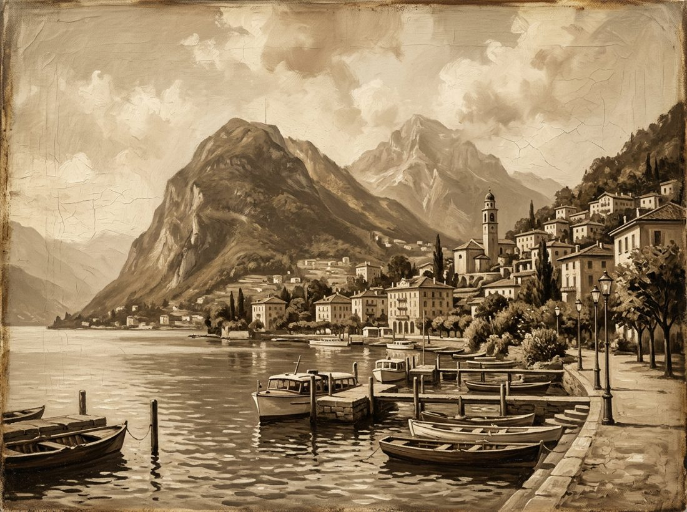
אל ארץ ישראל
בקיץ תש״ה עלה לארץ דרך ספרד, באוניה ״פלוס אולטרה״ שהגיעה לנמל חיפה בח׳ בתמוז, והתיישב בפתח תקווה. כתביו, שנשלחו אחריו, אבדו בדרך.
למד בבית מדרש לתורת ארץ ישראל בפתח תקווה, בחברותא עם הרב חיים שאול קרליץ.
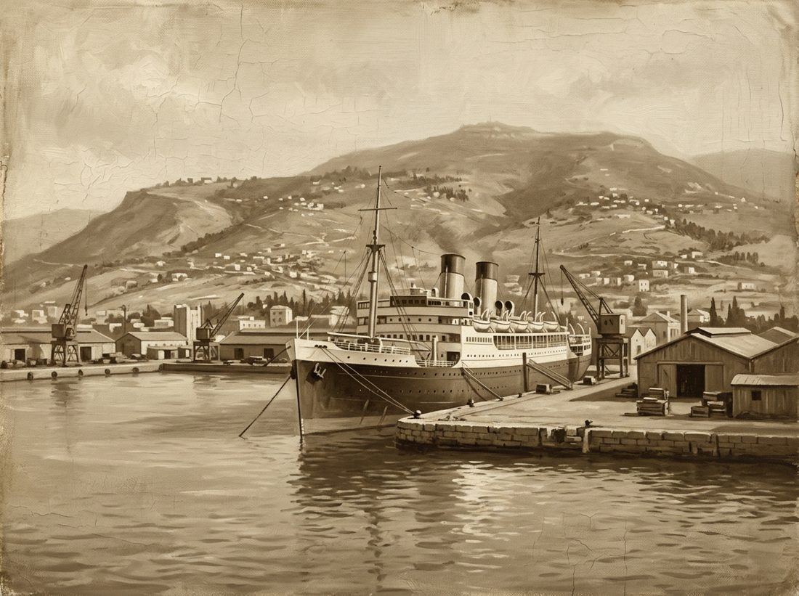
ראש ישיבה בכפר סבא
בהמלצת החזון איש מונה לראש ישיבת חפץ חיים בכפר סבא. בקיץ תשי״ב נפתחה שם ישיבה גדולה על שם רבי חיים עוזר גרודז׳ינסקי, והוא עמד בראשה.
כאן החל מפעל חיים של הרבצת תורה, שיימשך כשמונים שנה.
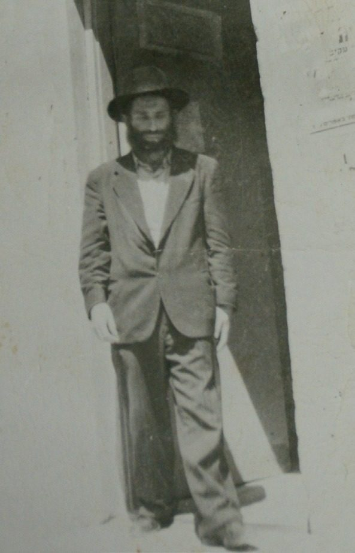
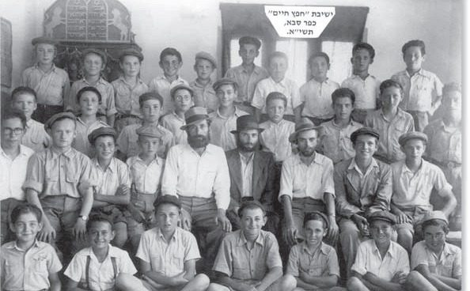
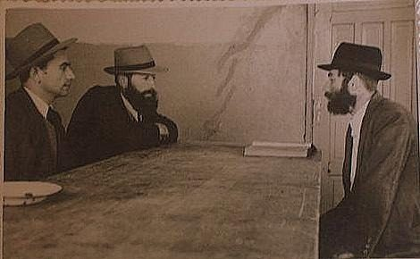
בני ברק, ישיבת פוניבז׳
באלול תשט״ו מינה אותו הרב כהנמן לראש ישיבת פוניבז׳ לצעירים, ובתשכ״ה גם לראש כולל פוניבז׳, ושני התפקידים נשארו בידיו.
מכאן עודד את עולם הכוללים: יזם וסייע בהקמת רשתות שבהן אלפי אברכים, גם הרחק מהריכוזים החרדים הוותיקים.
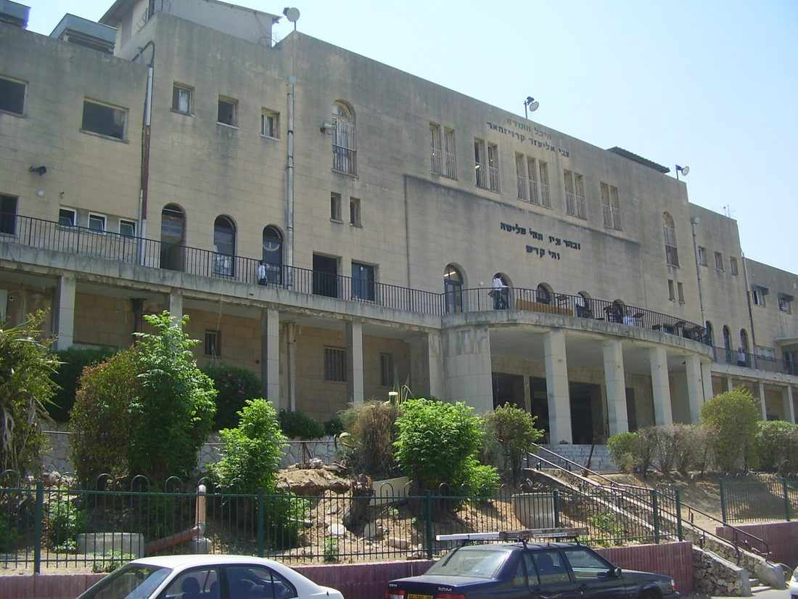
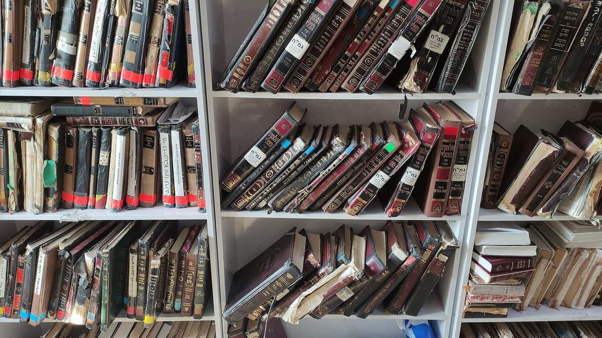
ישיבת גאון יעקב
בתשל״ח הקים את ישיבת גאון יעקב ועמד בראשה, ושנים אחר כך הניח את הנהגתה בידי חתנו, הרב זאב ברלין.
לאורך השנים חיבר כשלושים ספרים, ובראשם סדרת ״אילת השחר״ על הש״ס ועל התורה. חייו בדירה קטנה ופשוטה בבני ברק היו עדות לדברים שלימד.
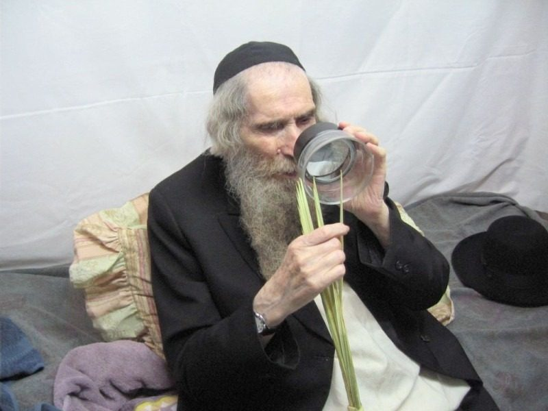
ייסוד ארחות תורה
בחודש סיון תשנ״ח ייסד את ישיבת ארחות תורה בבני ברק, ומסר בה שיעור כללי מדי שבוע ושיחות מוסר. סביבה צמחו הישיבות המסונפות, שבהן נשא בתואר ראש ישיבה.
היום לומדים ברשת 4,500 בחורים, בהיכלים מהגליל ועד הנגב.
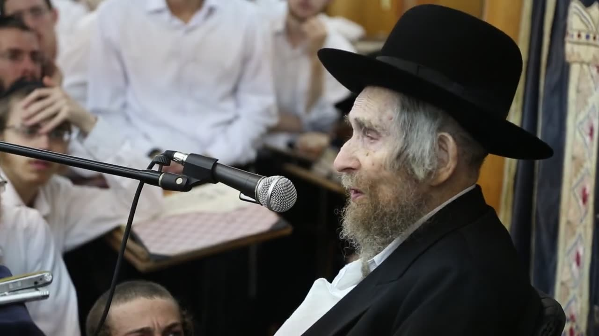
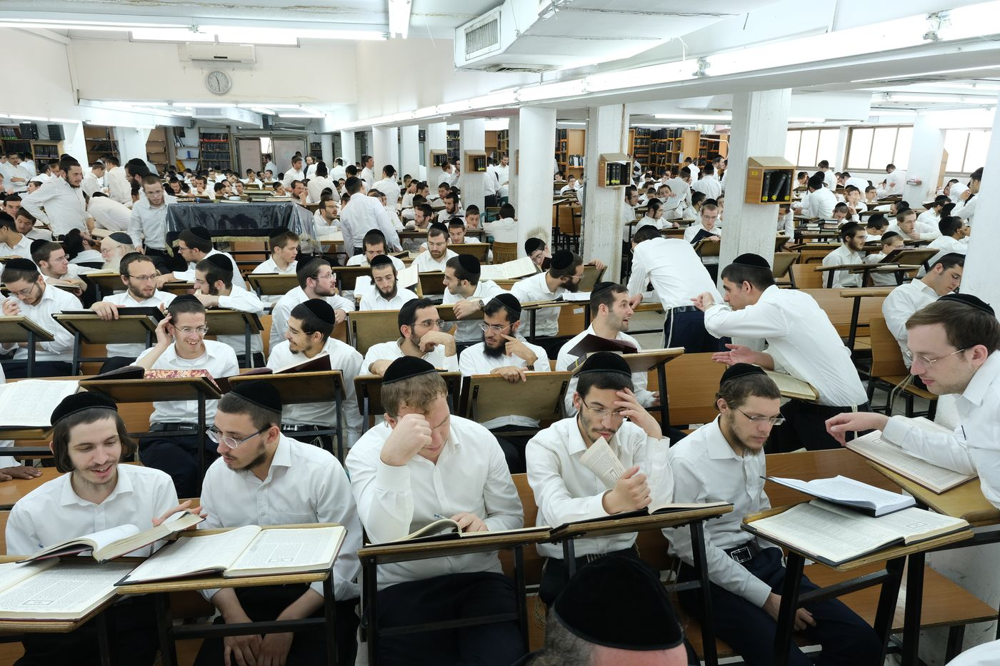
בהנהגת הציבור
בתשמ״ט הזמין אותו הרב שך לכהן במועצת גדולי התורה של דגל התורה. אחרי פטירת הרב שך עמד לצד הרב אלישיב בהנהגת הציבור, ובהמשך נשא בעול ההנהגה.
עד שנותיו האחרונות קיבל קהל בביתו מדי יום, לעצה ולברכה, והכווין ראשי ישיבות ומחנכים.
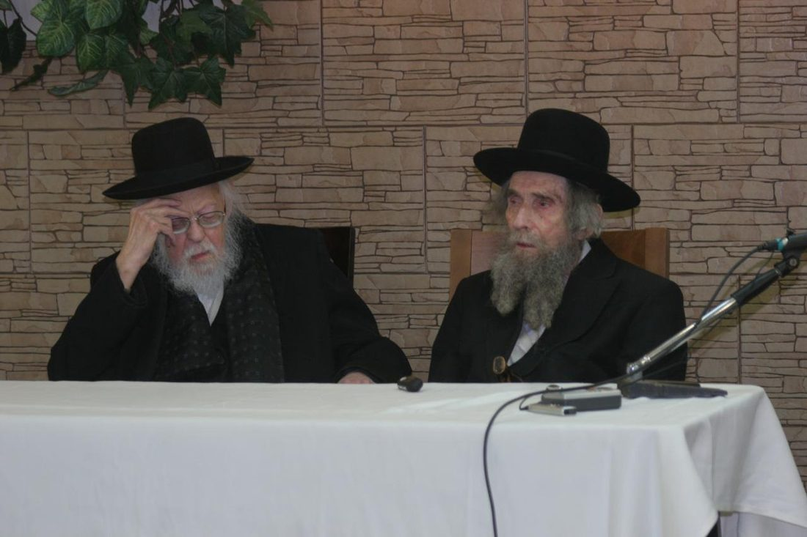
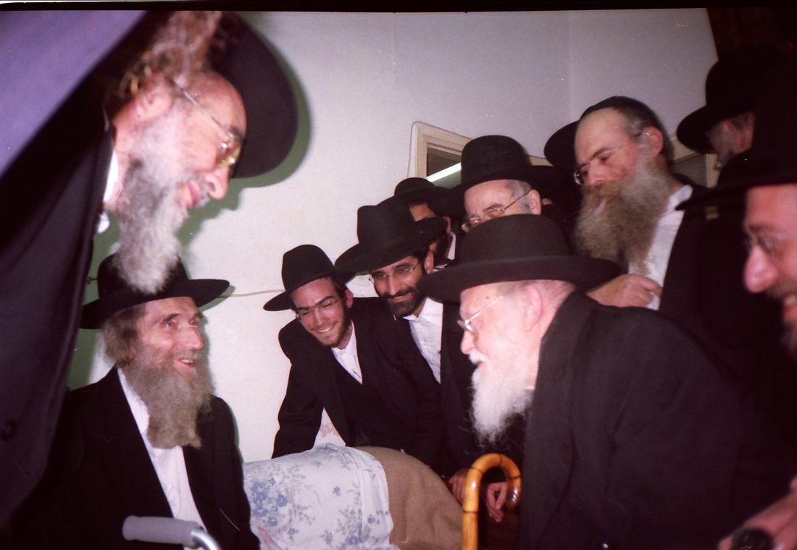
מסעות לחיזוק התורה
בזקנתו יצא שוב ושוב למסעות בקהילות ישראל: ארצות הברית וקנדה, צרפת, בריטניה ושווייץ, מקסיקו, ברזיל, ארגנטינה ועוד.
בכל מקום עודד הורים לשלוח את בניהם לתלמודי תורה, ביקר בישיבות וגייס תמיכה בלומדי התורה ובמוסדות החינוך.
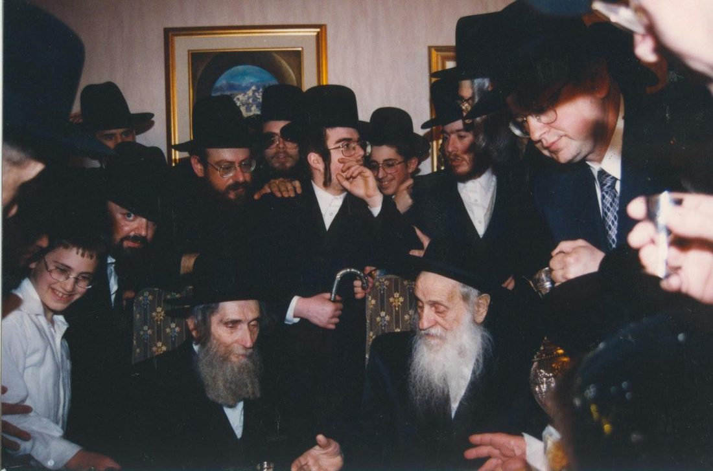
הסתלקותו לגנזי מרומים
מרן נפטר בכ״ד בכסלו תשע״ח, בגיל 103. בצוואתו ביקש קבורה מהירה, בלי הספדים ובלי תארים, ומצבה פשוטה, ושמי שרוצה לפעול לזכותו ילמד משניות ותהילים.
כמאתיים אלף איש ליוו אותו בבני ברק באותו יום.
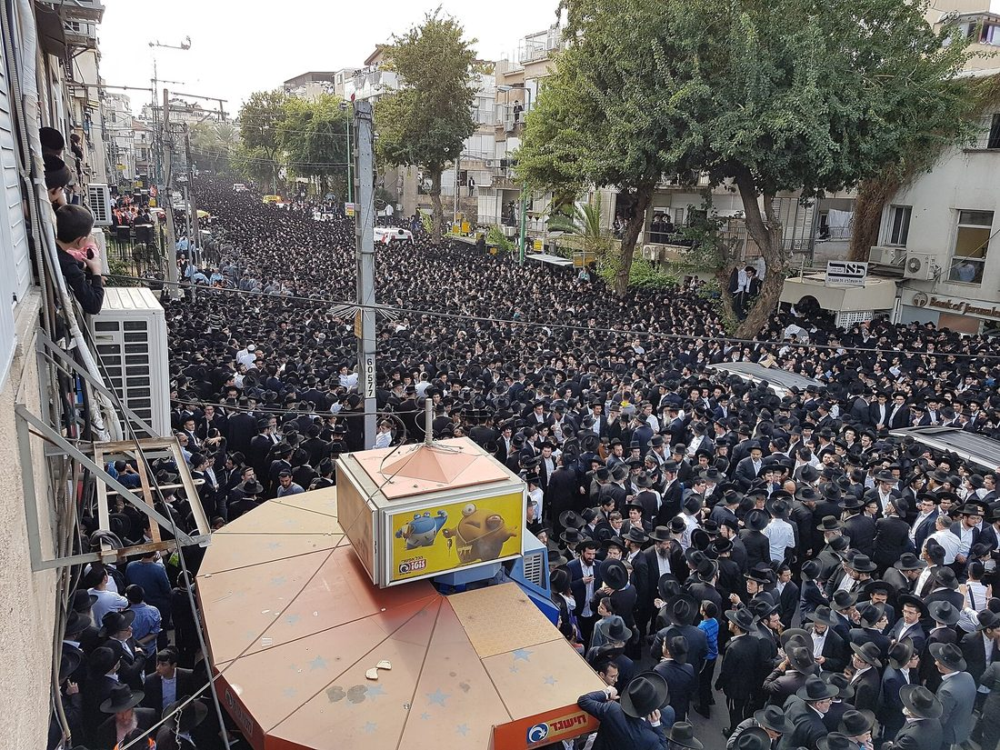
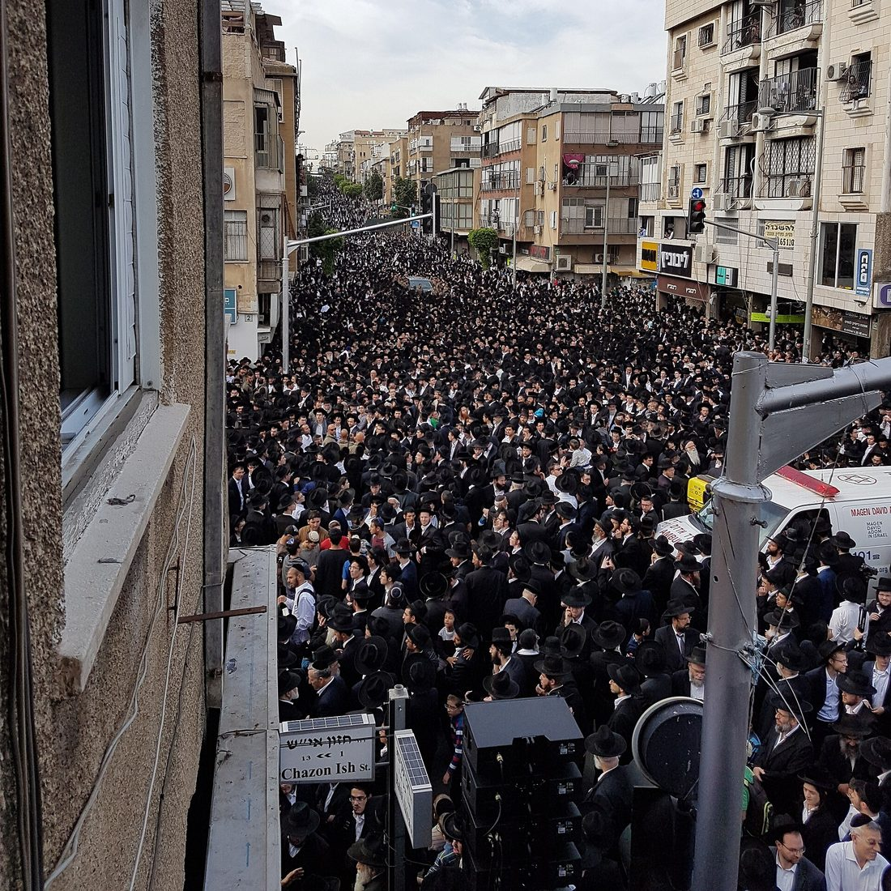
והדרך נמשכת
בעצרת השבעה הוכרז על ייסוד ״קריית אילת השחר״ במתחם ישיבת ארחות תורה, על שם ספריו. הרשת שייסד ממשיכה ללכת בדרכו: לימוד בשקט ובענווה, בלי תחרות בין התלמידים.
מקורות וקרדיט לתמונות
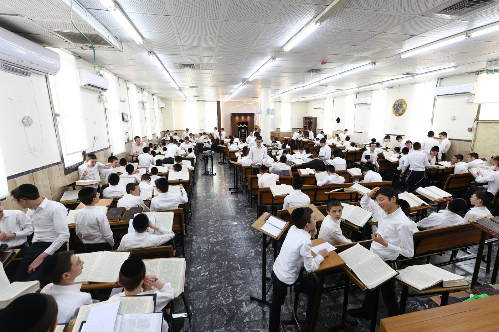
צרו קשר עם המשרד
לתרומות, הנצחות והחזקת לימוד, או לכל שאלה על הרשת. נשמח לחזור אליכם.